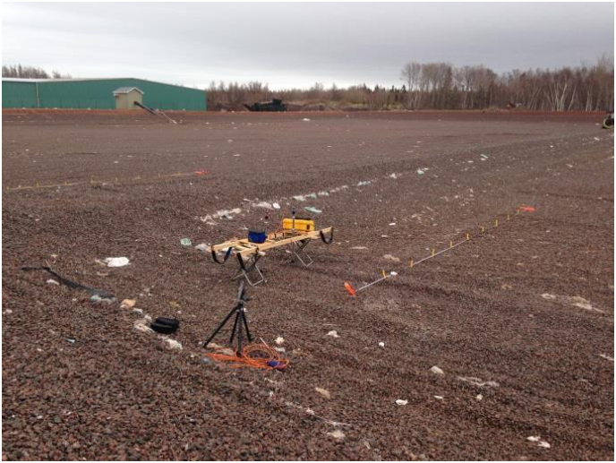
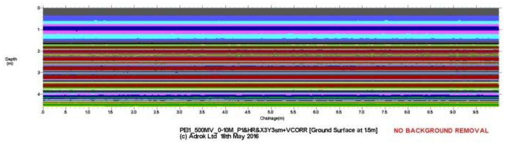
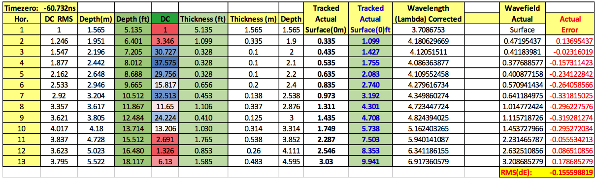
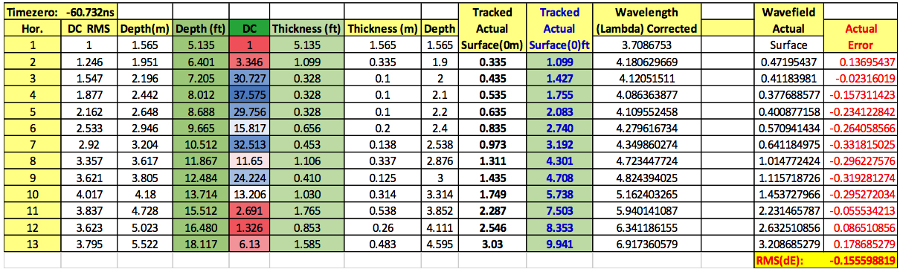
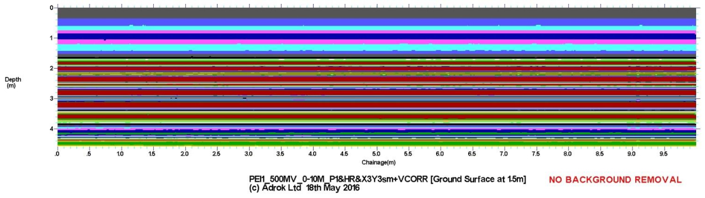
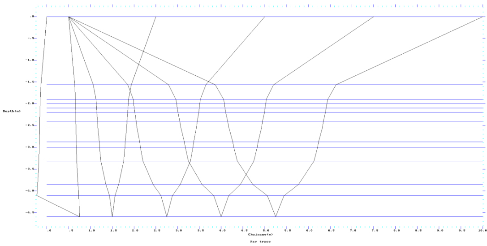
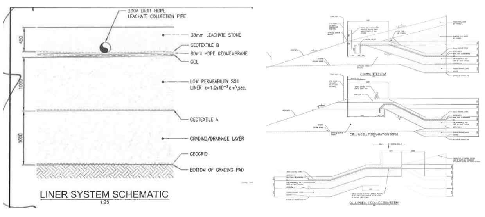

Application of the ADR technology to shallow ground applications and the ability to map various types of engineered layers within a constructed site
Project aims
A future waste disposal site has been constructed in an area where the sole source of water is from the ground. As such there are environmental concerns about any waste material or products from it, especially when it decays, leaching into the water table.
To prevent any possible contamination of the groundwater, landfill sites have to be specifically designed and undergo rigorous environmental monitoring duration construction and throughout the life of the project.
Due to a miscommunication of the responsibilities, one site did not receive adequate monitoring during the construction phase. Although it was highly likely that the engineering drawings would have been followed there was no proof that could be provided by either the contractor or the consulting engineers. As such they had limited options to prove that the site complies with the rigorous regulations and construction standards.
- Dig a series of ‘test’ pits at random locations across the entire site.
- Carry out a Ground Penetrating Radar (GPR) survey.
- Ask Adrok to survey the site to see if the technology can help.
Project challenges
Options discussed with the waste site management precluded the GPR survey due to the very wet ground conditions at the site. The experts from Stantec concluded that the GPR equipment available to them would not be able to clearly distinguish the separate layers.
The Adrok technology is easily capable of penetrating very wet ground and has the potential to map the individual layers to the resolution required. However the current equipment is designed for deep ground applications and as such it was not known if the usable data could be separated from the “noise” that would be present in such an application.
This left the client with the only other option which was to dig a number of inspection pits. This would still create issues:
- Digging a pit will damage the PTFE lining. Any repair will not be as strong as the original one piece liner.
- Selection of random locations does give some confidence that the engineering specifications were adhered to, but the cost of this work means the whole site could not be completely covered.
It was therefore proposed that Adrok carry out some test scans across the site to see what results might be possible and how quickly.
It should be pointed out at this point that this work was undertaken by Adrok free of charge as an experiment.
Geological context
The area where the waste site has been constructed forms part of the Maritime Carboniferous Basin. Beginning some 220-300 million years ago, and continuing for more than seventy-five (75} million years, this lowland region or plain received massive accumulations of eroded material from the surrounding highlands. Brown and cloudy with sand, silt and gravel, ancient rivers drained these areas was formed as a result of this deposition as well as tectonic upheaval which elevated the Island above sea level.
Today, a mantle of loose material known as glacial till, laid down 10,000 to 15,000 years ago, covers much of the Island. The underlying sedimentary bedrock consists of soft red sandstone intermixed with shale. Rock exposures are predominately sandstone with lesser amounts of siltstone, claystone and conglomerate also present.
The only freshwater available is from aquifers formed within the bedrock. There are a few freshwater rivers but these do not have the capacity to be a usable commodity.
Adrok’s Survey
The survey design aimed to exploit the imaging capability of the ADR technology as well as the more traditional tracking of the layers using their dielectric constants. Two separate locations were identified where a 10 metre scan line could be completed.
 Figure 1: the two 10 metre survey linesFor the imaging work, profile scans (P-Scans) were carried out along the lines. This involves the antennas being traversed along the survey line at a slow and steady pace with the antennas at a fixed distance apart (in this case they were 1 metre apart). The equipment is continually transmitting its pulsed waveforms and the returned signals are collected for later processing and analysis. Effectively this type of scan gives a two-dimensional ‘slice’ of the ground being surveyed. The lowest possible equipment settings were used.
 Figure 2: a profile of the 10 metre survey line showing the different layers tracked by their dielectric constantWhen the waveform is transmitted into the ground it will pass through each different layer, with reflections being sent back to the Receiver Control Unit (RCU) when a change of material type creates a boundary. Each of the layers being passed through will have an effect on the waveform. One of these effects is the speed at which the signal will pass through that material type, with the biggest speed reduction being produced by high water content. This speed of transmission is called the dielectric constant of the material and is a very useful measurement for tracking different layers.
Figure 3: Table showing the various dielectric constants mapped across the survey line.The other measurement that was possible from the two methods employed was the ability to track the path of the waveform. Each signal pulse consists of a waveform that has a myriad of ray paths within it. By tracking the ray paths it is possible to ‘focus’ the results that have been returned to the RCU, in effect making the signal coherent and potentially directional.
 Figure 4: diagram showing the ray paths as they are tracked from each of the different layers.

Figure 5: Dielectric Table showing the layers that were tracked
Figure 4: diagram showing the ray paths as they are tracked from each of the different layers.

Figure 5: Dielectric Table showing the layers that were tracked
By processing the Wide Angled Reflection & Refraction (WARR) scan the layers can be mapped based on the speed of transmission of the signal through each individual layer. This allows a 2-dimansional representation of the survey line to be created within the software. As shown below.
 Figure 6: Profile Scan of the 10 metre survey line.In the above diagram the Y axis represents the depth into the ground, with the surface at the top. The X axis represents the scan line starting on the left at 0 metres and finishing at 10 metres to the right.
 Figure 7: Ray Plot of each of the received returns from each tracked layer.The scale of the Ray Plot is the same as that of the Profile scan in Figure 6. What is interesting from this particular graph is that the direction plot of the individual ray paths is seen to change or bend at the change of material layer. It can be seen from the engineering drawings at Figure 8 that this layers very accurately map the different layers that would be expected to be seen.
 Figure 8: Engineering Drawings showing the actual build specifications.Benefits for client
This experimental survey work showed that despite the reservations about the shallow ground capability of the current equipment it was possible to track the layers using both the dielectric constants of the different materials and to accurately predict the layers thickness by plotting the ray paths as they passed through the different layers.
The speed at which the survey can be completed means that a far larger area of the built site can be surveyed; it is completely non-destructive and once confirmed with one or two physical pits would give a much higher degree of confidence as to the overall compliance of the site.
By cutting down on the number of observation pits that would need to be dug this would massively reduce the damage to the PTFE liner and the associated problems that will be caused by repairing the fabric.